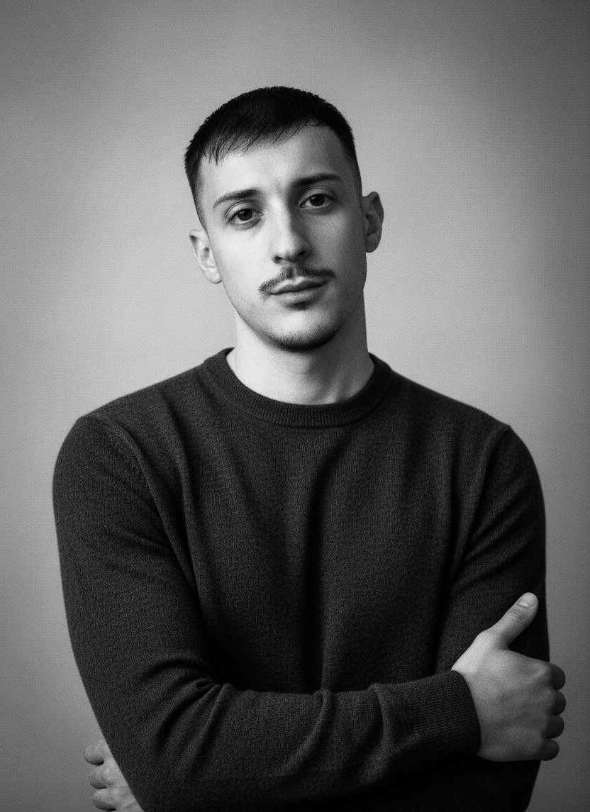

Cover story · Profilo
BRUNO
POSTIGLIONE
Da Napoli al mondo della moda di lusso
Una passione nata a tredici anni a Napoli. Gli studi in Fashion Design allo IED Milano nel 2018. Il racconto di un percorso professionale tra creatività, formazione e maison internazionali.
Leggi la storia →
THE FASHION EDITION · PORTRAIT
Le storie
ISSUE 001 / 2026THE FASHION EDITION
Un nuovo sguardo sulla moda contemporanea.
Un progetto editoriale indipendente, in italiano e inglese, dedicato a moda donna, designer, cultura visiva, artigianato e nuove generazioni creative. Approfondimenti e profili sono distinti dalle notizie verificate.